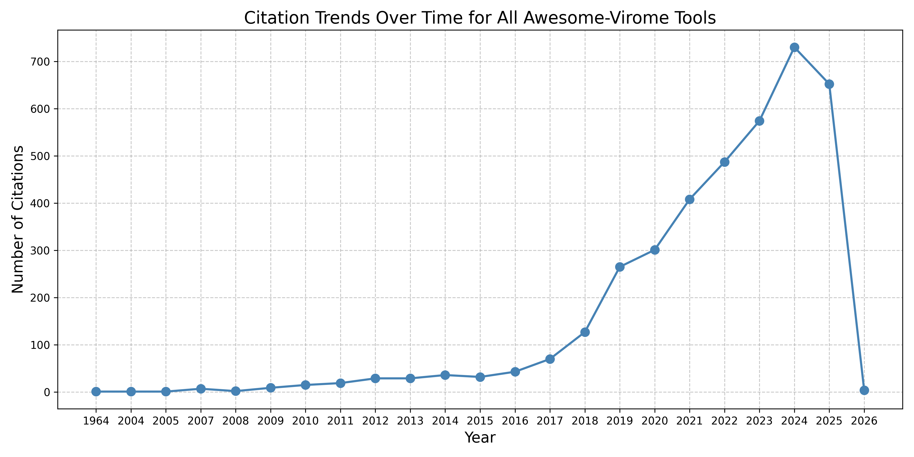
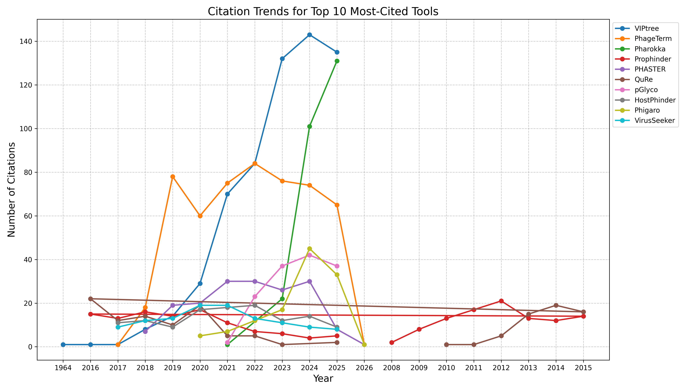

Awesome-Virome Academic Impact Report
Generated on May 01, 2025
Summary
This report provides an analysis of academic impact for tools in the Awesome-Virome repository.
- Total Tools Analyzed: 296
- Tools with DOIs: 159
- Tools with Citations: 35
- Total Citations: 1602
Most-Cited Tools
The following tools have received the most citations in academic literature.
Top 10 Most-Cited Tools
| Rank | Tool Name | Citations | Influential Citations | DOI |
|---|---|---|---|---|
| 1 | Prophinder | 208 | 25 | 10.1093/bioinformatics/btn043 |
| 2 | Pharokka | 175 | 32 | 10.1093/bioinformatics/btac776 |
| 3 | PHASTER | 163 | 7 | 10.1093/bib/bbx121 |
| 4 | QuRe | 146 | 10 | 10.1093/bioinformatics/btr627 |
| 5 | pGlyco | 118 | 3 | 10.1038/s41592-021-01306-0 |
| 6 | VirusSeeker | 111 | 6 | 10.1016/j.virol.2017.01.005 |
| 7 | Phigaro | 101 | 7 | 10.1093/bioinformatics/btaa250 |
| 8 | CrisprOpenDB | 86 | 7 | 10.1093/nar/gkab133 |
| 9 | PhANNs | 71 | 10 | 10.1371/journal.pcbi.1007845 |
| 10 | VirusTAP | 57 | 0 | 10.3389/fmicb.2016.00032 |
Citation Trends Over Time
This section shows how citations to Awesome-Virome tools have evolved over time.


Citation Network
This visualization shows connections between tools based on shared citations and related papers.

Most Connected Tools
These tools share the most citations and related papers with other tools in the repository.